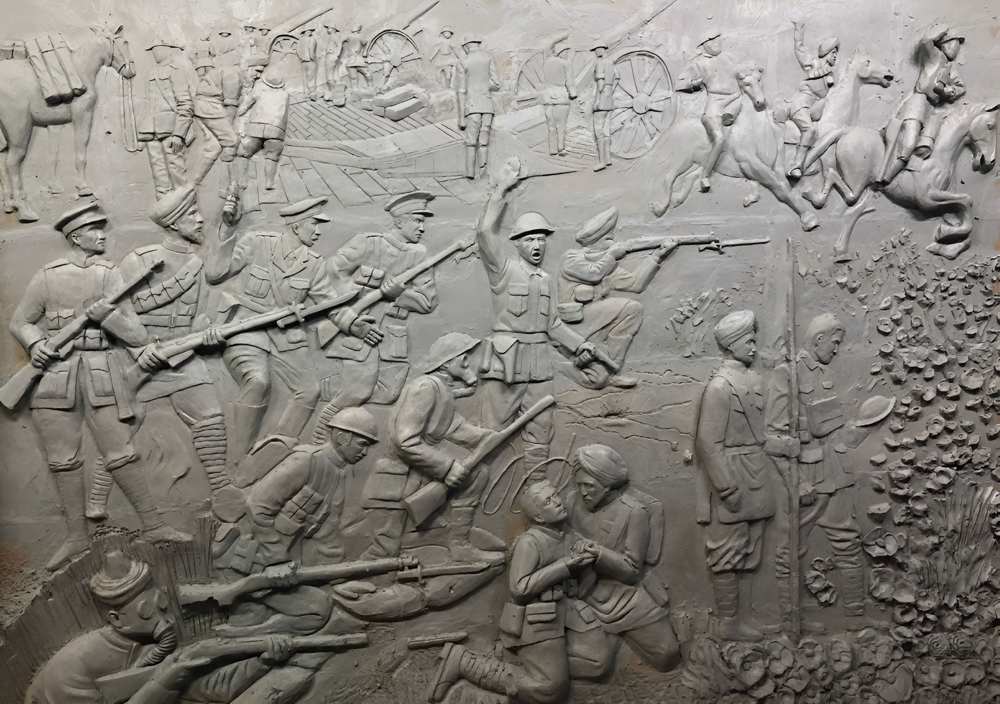
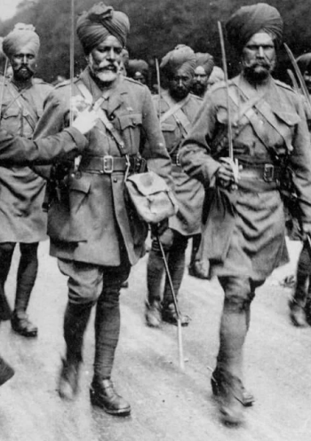
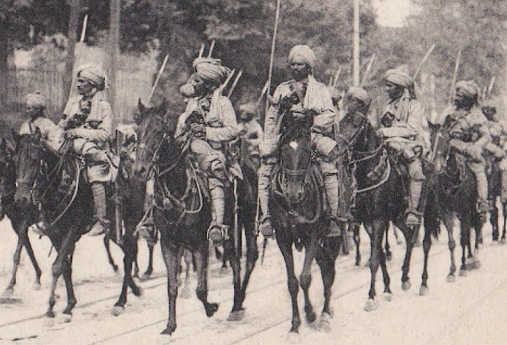

Gone But Never Forgotten
Every soldier had a story—stories of sacrifice, bravery, and brotherhood. The Memorial Stories page is dedicated to sharing the voices of those who fought side by side, ensuring that their legacy is never forgotten. Through letters, personal accounts, and tales of extraordinary valor, we honor their memory and the deep bond between Indian and Canadian soldiers.

Honoring Indian Soldiers of World War I
During World War I, Indian soldiers played a crucial role in the First Battle of Ypres (1914), fighting alongside British and Allied forces to stop the German advance in Belgium. The Indian Corps, including the Lahore and Meerut Divisions, arrived on the Western Front and faced brutal trench warfare in freezing conditions. Despite being unfamiliar with the European climate and battlefield tactics, they held key positions and reinforced exhausted British troops.
The Indian soldiers showed immense bravery at Ypres, often launching counterattacks and holding trenches under relentless artillery fire. They suffered heavy casualties due to enemy machine guns, gas attacks, and lack of proper winter clothing. Many Sikh, Gurkha, and Punjabi Muslim regiments distinguished themselves in battle, with stories of individual heroism becoming legendary. The lack of reinforcements and exhaustion made their situation even more difficult.
Despite their sacrifices, the contributions of Indian soldiers at Ypres were largely overlooked in post-war records. Over 7,000 Indian soldiers died on the Western Front, including many at Ypres. Their courage and dedication were later recognized, but many returned home with little reward. Today, their sacrifices are honored at memorials like the Menin Gate in Belgium and the Neuve-Chapelle Memorial in France.


India's Massive Contribution to the War Effort
During World War I (1914-1918), over 1.3 million Indian soldiers served in various theaters of war, making India the largest contributor to the British war effort outside Europe. Indian troops fought bravely on the Western Front (France and Belgium), the Middle East (Mesopotamia, Gallipoli, and Palestine), and Africa, enduring harsh conditions and heavy casualties. Despite their sacrifices, their contributions remained largely overlooked in mainstream war histories for decades.
The Battle of Ypres: Bravery in the Trenches
One of the most significant battles Indian soldiers participated in was the First Battle of Ypres (1914) in Belgium, where the Indian Corps, including the Lahore and Meerut Divisions, reinforced British and French forces. They fought in extreme weather conditions, facing relentless German attacks, gas warfare, and trench warfare for the first time. Despite shortages of food, proper winter clothing, and reinforcements, they displayed extraordinary courage, holding strategic positions and counterattacking enemy forces.
Legacy and Remembrance of Indian Soldiers
Indian soldiers also played a crucial role in Mesopotamia (modern-day Iraq), Gallipoli, and Palestine, where they fought against Ottoman and German forces. The Mesopotamian campaign, in particular, saw one of the worst military disasters at the Siege of Kut (1916), where thousands of Indian troops were taken prisoner. By the end of the war, nearly 74,000 Indian soldiers had lost their lives, and many more were wounded. Their bravery is commemorated in memorials such as the India Gate in New Delhi, the Menin Gate in Belgium, and the Neuve-Chapelle Memorial in France.
Voices from the Front
Memorial Wall
Keep their
Legacy alive
To commemorate the valour of Indian and Canadian Brothers in Arms, to inspire future generations to uphold values of humanity and freedom.